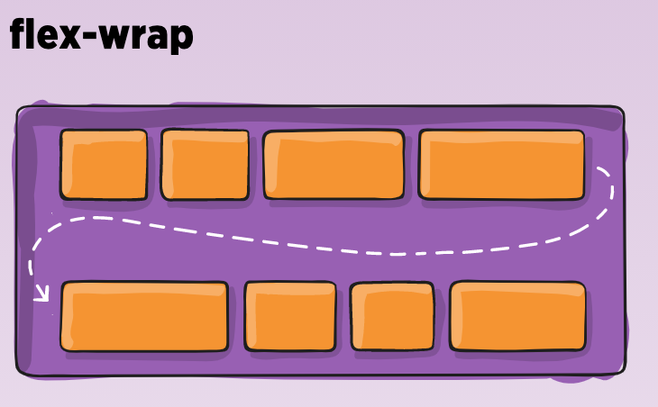

Back To Basics Series
CSS #2
Back to Basics CSS #1 Recall
- What have been seen in the first part of the back to basis CSS :
- Structure of a web page
- CSS History
- Cascading Style Sheet
- Web Browser compatibility
- CSS Rule Anatomy
- Units and Values
- Shortened Properties
- CSS Selectors
Back to Basics CSS #1 Recall
- What have been seen in the first part of the back to basis CSS :
- Pseudo Classes
- Selectors Priorities
- Display Attribute
- Native Style of Web Browser
- Position Attribute

Grid
CSS Grid Layout is a two-dimensional grid-based layout system
.container {
display: grid;
}
.container {
grid-template-columns: 40px 50px auto 50px 40px;
grid-template-rows: 25% 100px auto;
}
Grid
Once you have defined the container, you can set the item in it
.item-a {
grid-column-start: 2;
grid-column-end: 5;
grid-row-start: 1;
grid-row-end: 3;
}
Grid
Inside a block of a container, you can also set the item
.item-a {
justify-self: center;
align-self: center;
}
Grid
There are many shortened properties for grid system grid-column, grid-row, grid-area, grid-template, grid-gap, place-self... you can discover them in the following site
RessourcesFlexbox
The Flexible Box Layout Module make easier to design flexible responsive layout structure.
.container {
display: flexbox;
}
The basic difference between CSS Grid Layout and CSS Flexbox Layout is that flexbox was designed for layout in one dimension.

The flexbox-direction attibute allows us to set the item direction.
.container {
flex-direction: row | row-reverse | column | column-reverse;
}
Flexbox
To set the space used by an item, you can use flex-grow
.item-a {
flex-grow: 2;
}
Flexbox
You can also define the way the items are justified and aligned
justify-content align-items
.item-a {
justify-content: flex-start | flex-end | center | space-between | ...;
align-items: flex-start | flex-end | center | baseline | stretch | ...;
}
Flexbox
To make Flexbox a two dimension layout. You can use flex-wrap
flex-wrap
.container {
flex-wrap: nowrap | wrap | wrap-reverse;
}
Flexbox
You can discover on the console the parameter values and render.
There are many other and shortened properties for flexbox system flex, flex-shrink, order, flex-wrap, flex-basis, flex-flow, align-self, align-content... you can discover them in the following site
RessourcesQUESTION
When do you use Grid or Flexbox ?
QUESTION

QUESTION
Grid for the construction of the principal containers (yellow zones)
Flexbox for the internal components (green zones)
RessourcesTraining Flexbox Grid
https://mastery.games/flexboxzombies/ https://cssgridgarden.com/Use of Media Queries
By using the @media attribute on particular criterias,
You can apply specific styles to make responsive web site regarding your media.
@media (max-width: 600px) {
flex-direction: column;
}
Use of Media Queries
- Here are the criterias you can use :
- width, height: dimension of the screen
- device-weight, device-height: dimension of the device
- orientation: landscape, portrait
- resolution: resolution in dpi, dpcm, dppx
- color: color management in bits, pixel
- aspect-ratio: ratio of the device (for instance : 16/9)
Note : you can also set the list of device to support the rules : screen, print, projection, tv, speech, ... By default, it is all.
QUESTION
How to define the common range of screen sizes for Media queries ?
RessourcesTransformations
It allows to make creative web page by allowing to rotate, translate, transpose, zoom items only with CSS.
.item {
transform: rotate(15deg)
}
For instance a card flip, can be done easily with transformation.
RessourcesTransformations
- Here are the transformations you can use :
- rotate: rotation of the items
- scale, scaleX, scaleY: zoom of the item
- translate, translateX, translateY: translation
- skewX, skewY: Deformation
- matrix: mathematical transformation
.item:hover {
transform: scale(1.10)
}
Note1 : do a search on "Do a barell roll" or "askew" in google and see the effects.
Note2 : There is also possibility to make 3D transformation.
RessourcesTransitions
When a CSS property is modified, the transition allow to make this modification not abrupt but animate.
.item {
transition: color 1s ease-in,
width 500ms,
}
The properties that can be animated are all numerical properties width, height, margin, padding, font-weight...
Transitions
- We use for this, the transition property which groups :
- transition-property: property to animate
- transition-duration: duration
- translate-timing-function: animation type
- transition-delay: delay before animation
Ressources
The translate-timing-function can be very funny
RessourcesAnimations
Animations are closed to transition but offer more controls.
We define the animation code by using the keyframes properties.
@keyframes animation-opacity {
from {opacity: 0.5;}
to {opacity: 1;}
}
Animations
- Then we define the element to apply the animation to :
- animation-name: property to animate
- animation-duration: duration
- animation-timing-function: animation type
- animation-iteration-count: number of iteration
- animation-direction: direction
- animation-play-state: state of animation
- animation-delay: delay before animation
- animation-fill-mode: state after execution
.element:hover {
animation: animation-opacity 750ms ease-in-out 1 0,1s;
}
QUESTION
Do you use Transformations, Transitions or Animations in your application?
It can be part of the user experience !!!
Ready to play
The way to define if your are CSS ready:
Can you go from this without CSS
To this in Desktop and Mobile
to do that add your css in the following html page : FileIn Desktop: picture and form are displayed in row, CSS expert rotate on itself, blue color is #0082C3
In Mobile: picture and form are displayed in column, no label for the menu,